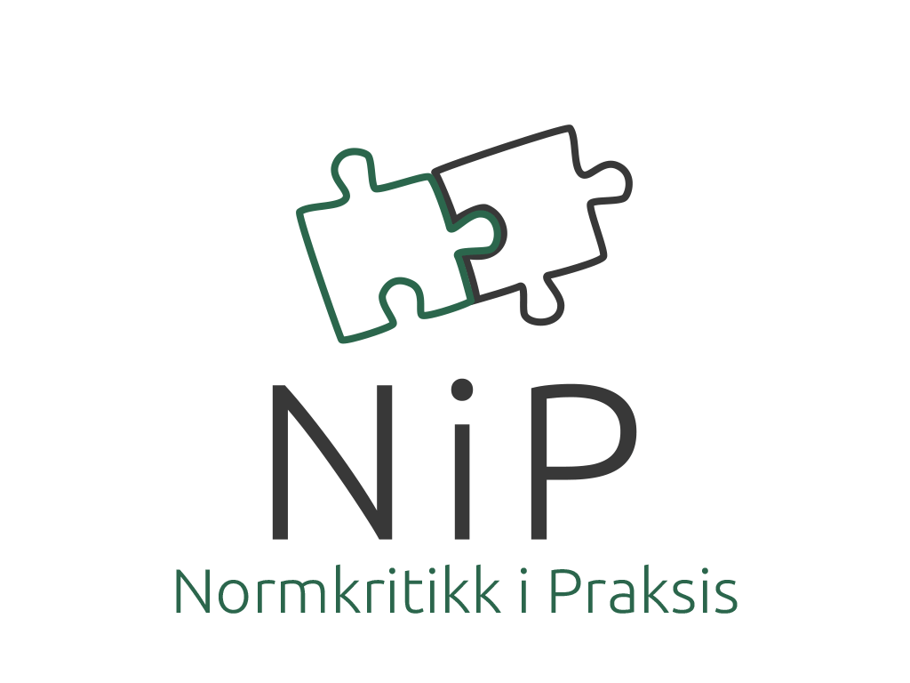

Hvem er vi?

NIP, Normkritikk i praksis er en organisasjon som jobber med å fremme normkritisk tenkning
og utarbeider praktiske verktøy slik at du kan ta med dette inn i forskjellige utdanningssituasjoner.
Organisasjonen ble grundet i 2011 og har siden jobbet med forskjellige prosjekter
og oppdrag. Organisasjonen drives av Erna Ernadsen og Hilda Hildursdottir, som begge er pedagoger med utdanning innen normkritikk, sosiologi og pedagogikk.
Her finner du oss;
Vogts gate 42b, 0474 Oslo
+4790854672